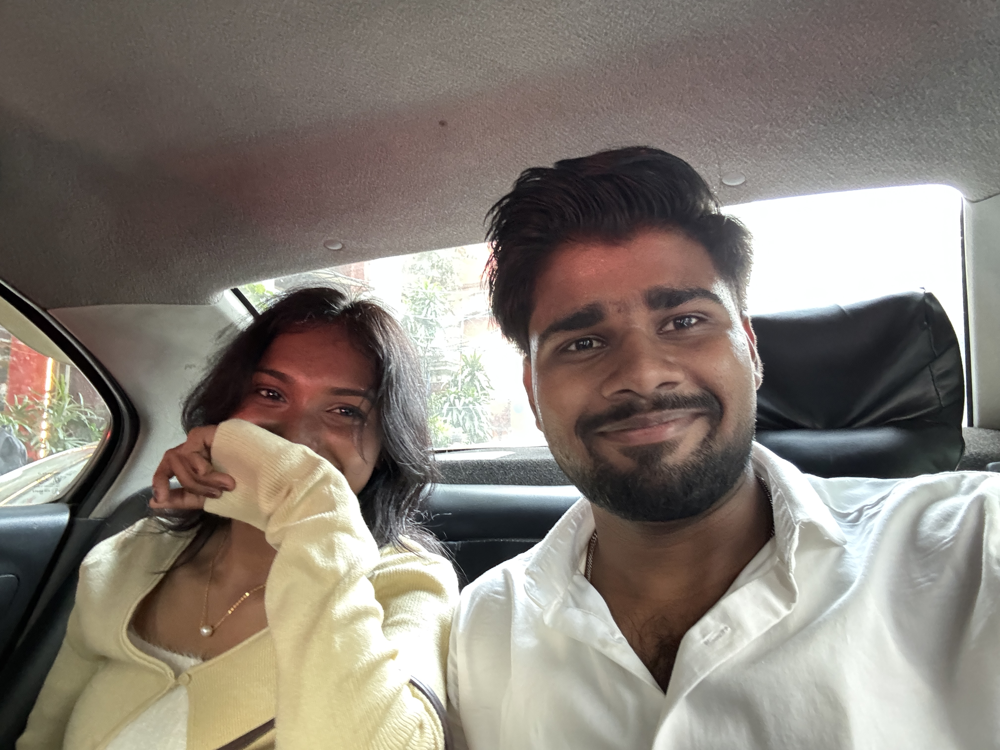
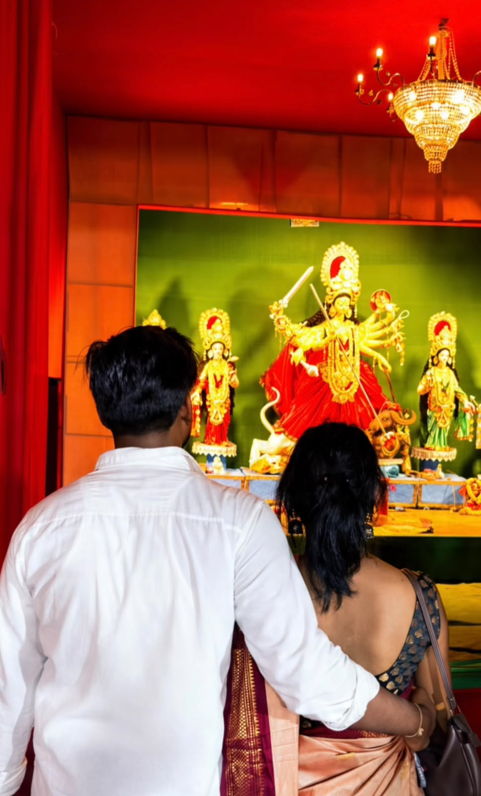
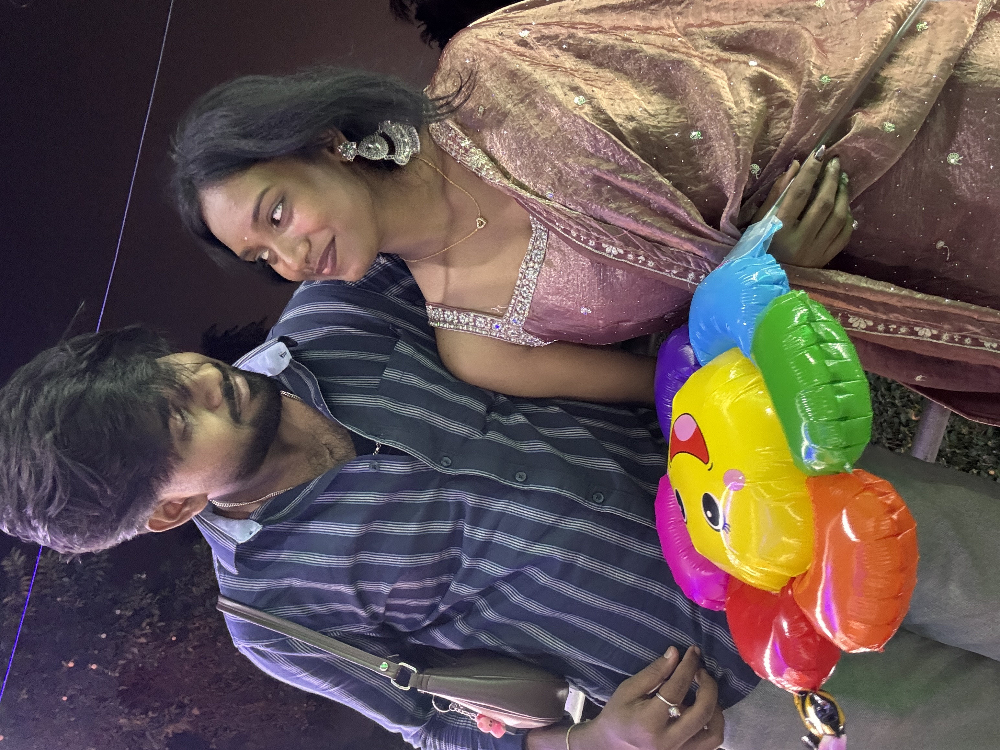

✦ MADE WITH LOVE, JUST FOR YOU ✦
For My Favourite Person.
A little corner of the internet, made especially to remind you how special you are to me.
A Little Something For You ♡TO MADAM JII
Some People Make
Ordinary Days Feel
Magical.
And then there's you. Thank you for being such a beautiful part of my little world. This website is small, but every little part of it comes from my heart.
LITTLE MOMENTS, BIG FEELINGS
Our Memories
Some moments are too special to be forgotten.

Beautiful Moment ♡
A memory close to my heart.

Special Day ♡
Some moments stay forever.

My Favourite Person
My favourite memories have you in them.
"In a world full of temporary things,
you feel like my favourite constant."
♡
A LITTLE NOTE FROM MY HEART
A Letter, For You.
Some feelings are difficult to explain, but I still wanted to try.
ONE LITTLE SURPRISE
Here's A Reminder...
You are someone's favourite notification. Mine, obviously! ♡